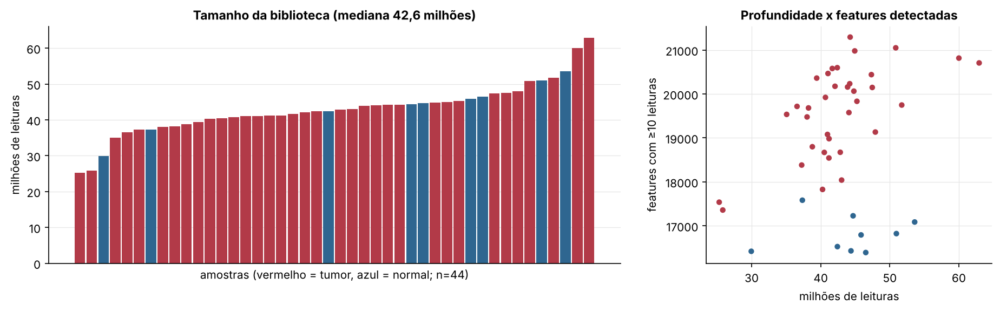
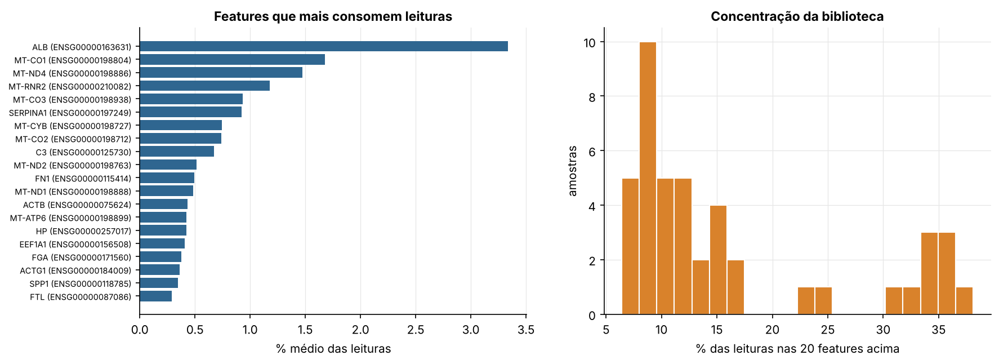
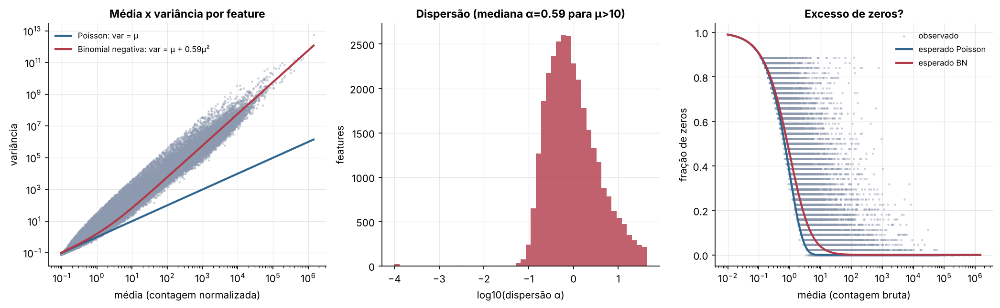
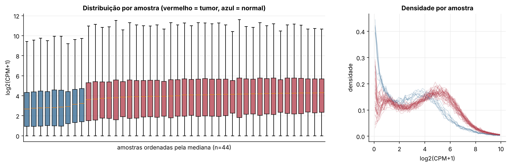
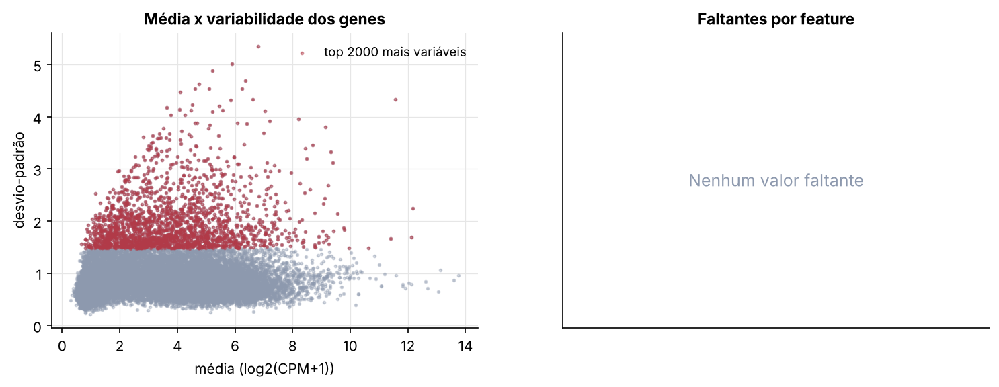
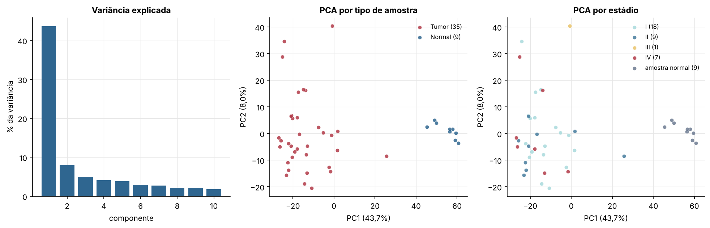
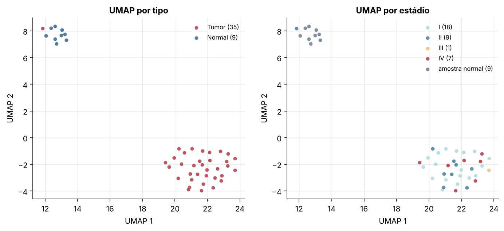
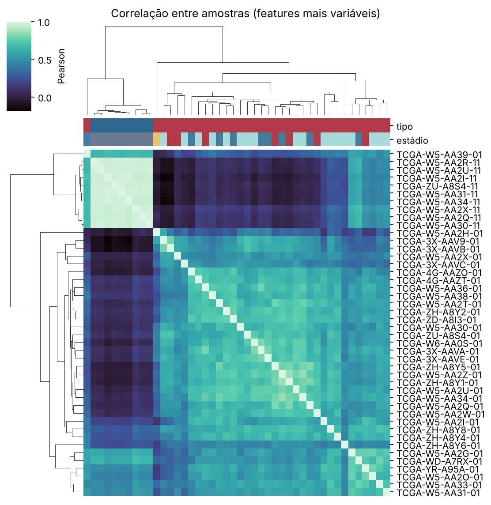
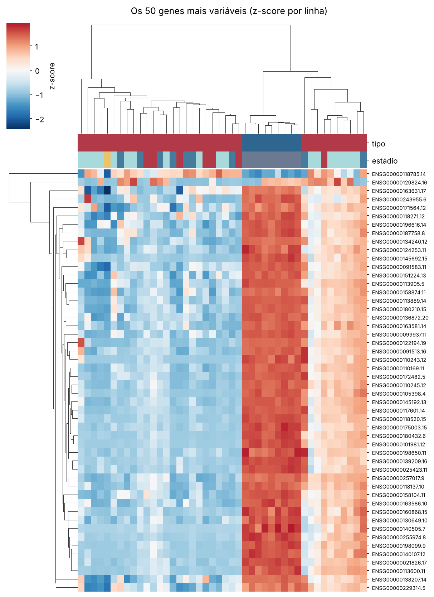
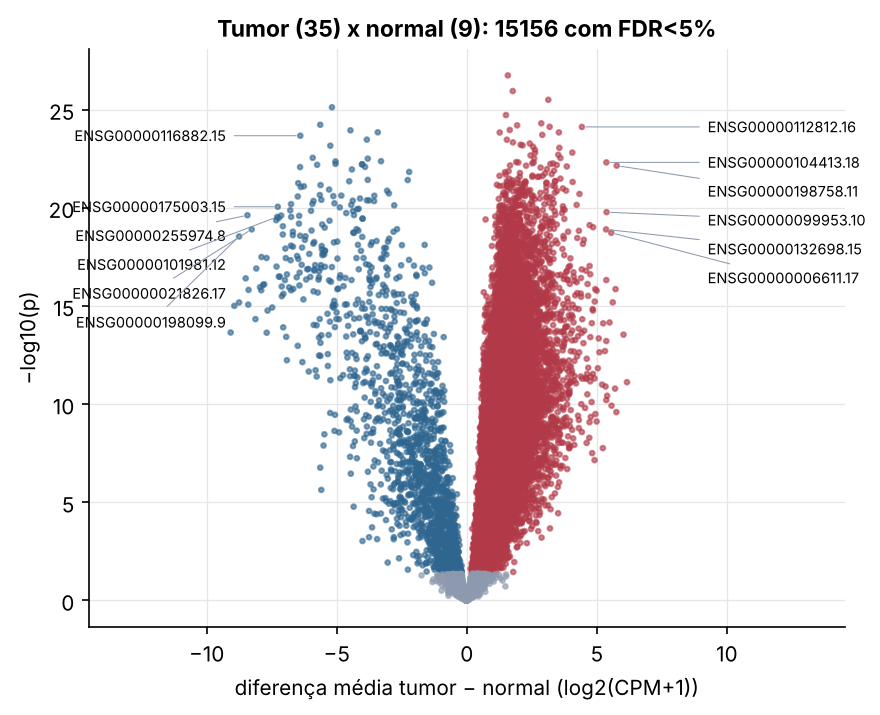

CHOL · RNA-seq: contagens brutas (GDC)
STAR - Counts (GENCODE v36) · gerado em 21/10/2026 19:03
42,6 Mtamanho mediano
0,59dispersão mediana α
17.172genes
35amostras tumorais
9amostras normais
0,0%valores faltantes
Fonte: GDC hub (STAR counts em log2(x+1), revertido para contagem)
A API do GDC não respondeu. As contagens vieram do GDC hub do Xena, que guarda log2(contagem+1); revertemos com 2^x−1 e arredondamento, o que pode diferir em poucas leituras nos genes muito expressos.
Principais resultados
- Bibliotecas de 25,3 a 62,9 milhões de leituras (mediana 42,6). 40.932 de 60.660 features têm leitura em pelo menos 10% das amostras.
- A variância cresce bem acima da média: a dispersão mediana da binomial negativa é α=0.59 (para features com média > 10). Isso descarta um modelo Poisson e indica binomial negativa (ou Poisson-lognormal) na verossimilhança.
- A fração de zeros é compatível com a binomial negativa (diferença mediana -0,1%); inflação de zeros não parece necessária.
- Em média 11,6% das leituras de cada amostra vão para as 20 features mais abundantes (ALB, MT-CO1, MT-ND4).
- 17.172 genes medidos em 44 amostras (35 tumorais e 9 normais); 0,0% dos valores estão faltando.
- Os dois primeiros componentes principais explicam 43,7% e 8,0% da variância das features mais variáveis.
- Correlação mediana entre amostras: 0,52.
- Tumor x normal: 15156 genes diferentes com FDR < 5% (13477 maiores no tumor, 1679 maiores no normal; 8 pacientes têm o par tumor-normal).
- Mais aumentados no tumor: ENSG00000178397.13, ENSG00000102054.18, ENSG00000149554.13, ENSG00000132581.10, ENSG00000106462.11, ENSG00000069329.18, ENSG00000161800.13, ENSG00000112812.16.
- Mais reduzidos no tumor: ENSG00000204653.10, ENSG00000090512.12, ENSG00000143257.12, ENSG00000213398.8, ENSG00000116882.15, ENSG00000180875.5, ENSG00000250056.8, ENSG00000083807.10.
- Nenhum dos três primeiros componentes principais se associou a estádio, sexo, idade ou sobrevida com p < 0,05.
Biblioteca


Sobredispersão e zeros

Exploração em log2(CPM+1)
Features com CPM ≥ 1 em pelo menos 20% das amostras (17.172 features).
Distribuição dos valores


Estrutura das amostras




Tumor x normal

Features mais diferentes entre tumor e normal
| diferenca_tumor_menos_normal | t | p | fdr | |
|---|---|---|---|---|
| ENSG00000178397.13 | 1.58 | 26.12 | 1.81e-27 | 3.11e-23 |
| ENSG00000102054.18 | 1.767 | 24.946 | 1.13e-26 | 9.74e-23 |
| ENSG00000149554.13 | 3.134 | 24.241 | 3.16e-26 | 1.81e-22 |
| ENSG00000204653.10 | -5.184 | -25.345 | 7.6e-26 | 3.26e-22 |
| ENSG00000132581.10 | 1.505 | 23.206 | 1.9e-25 | 6.52e-22 |
| ENSG00000106462.11 | 2.865 | 22.697 | 5e-25 | 1.31e-21 |
| ENSG00000090512.12 | -5.635 | -22.593 | 5.9e-25 | 1.31e-21 |
| ENSG00000069329.18 | 1.935 | 23.377 | 6.33e-25 | 1.31e-21 |
| ENSG00000161800.13 | 3.187 | 22.255 | 7.51e-25 | 1.31e-21 |
| ENSG00000112812.16 | 4.426 | 23.301 | 7.61e-25 | 1.31e-21 |
| ENSG00000131558.15 | 1.652 | 22.202 | 1.09e-24 | 1.63e-21 |
| ENSG00000143257.12 | -4.473 | -22.389 | 1.14e-24 | 1.63e-21 |
| ENSG00000213398.8 | -3.423 | -22.611 | 1.43e-24 | 1.68e-21 |
| ENSG00000134057.15 | 3.541 | 22.206 | 1.45e-24 | 1.68e-21 |
| ENSG00000225921.7 | 1.266 | 21.963 | 1.47e-24 | 1.68e-21 |
| ENSG00000184792.16 | 2.903 | 22.089 | 1.93e-24 | 2.07e-21 |
| ENSG00000116882.15 | -6.401 | -21.774 | 2.13e-24 | 2.15e-21 |
| ENSG00000180875.5 | -3.843 | -22.609 | 3.38e-24 | 3.09e-21 |
| ENSG00000103429.11 | 1.541 | 21.379 | 3.42e-24 | 3.09e-21 |
| ENSG00000198522.14 | 1.776 | 22.186 | 4.66e-24 | 4e-21 |
| ENSG00000179958.10 | 2.421 | 23.412 | 5.31e-24 | 4.34e-21 |
| ENSG00000163468.15 | 2.07 | 21.217 | 6.15e-24 | 4.8e-21 |
| ENSG00000122565.19 | 2.145 | 23.192 | 6.62e-24 | 4.92e-21 |
| ENSG00000250056.8 | -5.247 | -21.095 | 6.87e-24 | 4.92e-21 |
| ENSG00000128581.17 | 2.548 | 20.929 | 7.8e-24 | 5.36e-21 |
| ENSG00000237649.8 | 3.56 | 21.067 | 8.81e-24 | 5.82e-21 |
| ENSG00000213186.8 | 2.622 | 21.178 | 1.14e-23 | 7.22e-21 |
| ENSG00000114346.14 | 4.057 | 20.63 | 1.55e-23 | 9.48e-21 |
| ENSG00000108639.8 | 2.624 | 21.24 | 1.6e-23 | 9.49e-21 |
| ENSG00000157456.8 | 3.519 | 20.512 | 1.99e-23 | 1.14e-20 |
Associação com variáveis clínicas
p-valores da associação dos três primeiros componentes principais (só tumores) com estádio (Kruskal-Wallis), sexo (Mann-Whitney), idade (Spearman) e sobrevida global (Cox univariado).
| estádio (Kruskal) | sexo (Mann-Whitney) | idade (Spearman) | sobrevida OS (Cox) | |
|---|---|---|---|---|
| PC1 (14,4%) | 0.364 | 0.253 | 0.487 | 0.529 |
| PC2 (11,9%) | 0.605 | 0.362 | 0.573 | 0.877 |
| PC3 (9,0%) | 0.956 | 0.076 | 0.175 | 0.84 |